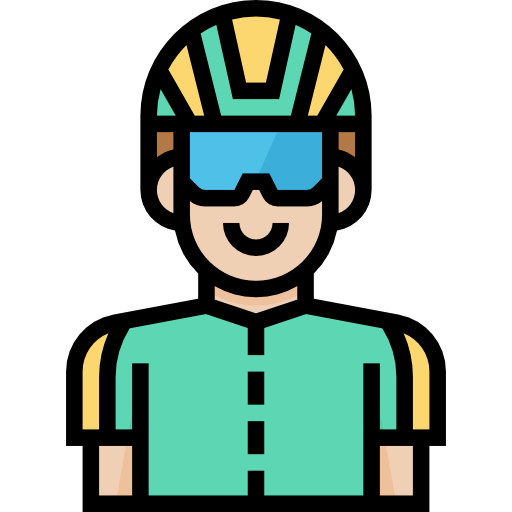

¿es tan peligroso?
10/11/21
El ciclismo de montaña, considerado un deporte de riesgo, es un ciclismo de competición realizado en circuitos naturales generalmente a través de bosques por caminos angostos con cuestas empinadas y descensos muy rápidos. Las bicicletas suelen ser fabricadas de aluminio, titanio, carbono u otras aleaciones lo más ligeras posibles, llevan suspensión delantera que está en la horquilla, con recorrido desde 100 a 210mm, que puede ser de resorte, aceite, aire o ambos sistemas combinados; algunas usan también suspensión para la rueda trasera, normalmente con un sistema de articulación en el cuadro de la bicicleta. La suspensión trasera puede estar, raramente, integrada en el cuadro. A finales de la primera década del siglo XXI, la mayoría usaba cambios de 9 velocidades en el piñón (casete) de la rueda posterior y 3 platos en la catalina. Posteriormente, en el mercado se comenzaron a comercializar bicicletas con biplato adelante y juegos de casete, de 10 y 11 velocidades en el eje trasero; en el 2015 se incursionó en el mercado con la catalina monoplato con casetes de 11 y 12 velocidades, y, hacia finales de la segunda década del siglo XXI, se creó un nuevo tipo con 13 velocidades, poco común entre los ciclistas. Estas configuraciones siempre son a elección del deportista, el avance de la tecnología permitió alojar más relaciones en el casete para simplificar la Catalina y hacer más sencillo el manejo de las relaciones llevándolos a un solo actuador en el manubrio a diferencia de los sistemas tradicionales con relaciones en el casete y también en la catalina que requieren de dos actuadores o sistemas electromecánicos automatizados más complejos y costosos

A historia del ciclismo se remonta al final del siglo XIX, más o menos a partir de 1890. Esto se debe a que las bicicletas empiezan a desarrollarse más rápidamente en ese momento en un intento de perfeccionar ese medio de transporte. Con estos avances, comenzó a ser posible alcanzar mayores velocidades con las bicicletas, cada vez más leves y menos costosas. El deporte tuvo origen inglés, pero desde temprano las principales pruebas surgieron en Francia, la cual se adhirió muy bien a esta modalidad y los participantes aprovechaban el terreno montañoso para desafiarse a ellos mismos..
Todo sobre Ciclismo [Reglas, Historia, …] - SportsRegras. (2022). Retrieved February 10, 2022, from Sportsregras.com website: https://sportsregras.com/es/ciclismo-reglas-historia/